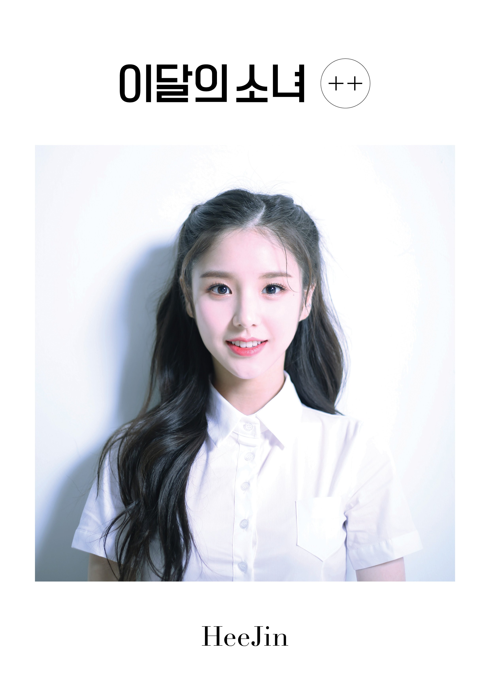

Jeon Heejin

A primeira membro do grupo a ser revelada com sua música de estreia: Vivid.
Aqui vai algumas informações sobre ela.
- Nome de nascimento: Jeon Hee-jin (전 희진).
- Nome artístico: Hee-jin (희진).
- Nascimento: 19 de outubro de 2000.
- Nacionalidade: Coreana.
- Mês: Garota de Outubro (apresentada em outubro de 2016).
- Animal: Coelho.
- Cor: Rosa Choque.
- Posição do grupo: Dançarina principal, vocalista chefe, centro.
- Signo do Zodíaco: Libra.
- Subunidade: LООПΔ 1/3.
Fatos da Heejin:
- Ela nasceu em Bundang-gu, Seongnam, província de Gyeonggi, Coréia do Sul.
- Ela tem duas irmãs mais velhas.
- Na audição, ela cantou "A-live" de Lin e foi aceita.
- Seus apelidos são Heekkie ("Coelhinha"), Fundadora (ela fundou a Loonaverse) e Ambicioso Coelho.
- No ensino médio, ela começou a frequentar uma academia de dança.
- Ela foi trainee por um ano.
- Heejin pode tocar violão.
- Ela sabe falar japonês.
- Heejin vivia no campo,(mais afastada da cidade) então levou 4 horas para chegar à sala de prática em Seul.
- Heejin era um concorrente do programa de sobrevivência da YG, MIXNINE.
- Heejin chegou ao 4º lugar no MIXNINE FINALE, mas seu time não chegou a estrear porque os trainees masculinos venceram.
Essas foram algumas curiosidades sobre a primeira membro a ser revelada do loona. E ela já tem sua data de re-debut (segunda estreia), então marquem no calendário: 31/10. Heejin faz parte da ARTMS junto com as membros do OEC e Haseul.
Confira mais de Heejin em suas redes oficiais.
Instagram
Canal oficial da empresa
@official_ARTMS